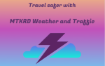

What's Next?
Keep an eye on this application for future updates. Overtime we intend to make this your go to tool by adding a plethora of useful features and evolving our current application and give it even more uses including turn by turn naviagation, pinpoint location and so much more!
Meet the Authors!
- Manuel Peña
Other works: Github
- Thomas Smith
Other works: Github
- Houssine Khay
Other works: Github
- Rashawn Hall
Other works: Github
- David Ayala-Irizarry
Other works: Github
Visit our Group Repo!